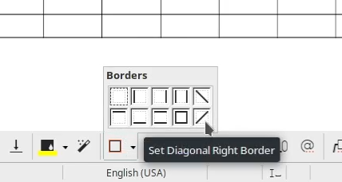
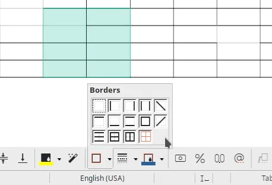

Week #6 - GSoC Weekly Report - 100 Paper Cuts
GSoC progress for week #6. (first evaluations week)
New icons for diagonal borders
- Bug: tdf#143300: Add icons for diagonal borders
I wanted to add diagonal borders to the table toolbar > borders but realized that LO doesn’t have diagonal left and diagonal right borders under ./icon-themes/*/svx/res/*. Then on the LibreOffice Design EN telegram channel, I said that these icons are necessary for tdf#51665. Designers wanted me to open a new report dedicated for the icons, so that Rizal Muttaqin(huge thanks for the icons) could draw them. Diagonal border icons will be added for all themes soon.
UI - add diagonal borders in Table toolbar
- Bug: tdf#51665: Support diagonal borders in TABLEs
- Commit: https://gerrit.libreoffice.org/c/core/+/118951
In order to work on tdf#51665, I added diagonal borders to table toolbar > borders.

One cell selected (standard view)

Multiple cell selected
Technical Details
- Tooltips
Added tooltip “Set Diagonal Left Border” for diagonal LEFT border.
Added tooltip “Set Diagonal Right Border” for for diagonal RIGHT border.
In include/svx/strings.hrc:
#define RID_SVXSTR_PARA_PRESET_DIAGONALLEFT NC_("RID_SVXSTR_PARA_PRESET_DIAGONALLEFT", "Set Diagonal Left Border")
#define RID_SVXSTR_PARA_PRESET_DIAGONALRIGHT NC_("RID_SVXSTR_PARA_PRESET_DIAGONALRIGHT", "Set Diagonal Right Border")- Icons
Added diagonal Left and Right borders to the svx/inc/bitmaps.hlst:
fr013.png -> Right Diagonal Border
fr014.png -> Left Diagonal Border
#define RID_SVXBMP_FRAME13 "svx/res/fr013.png"
#define RID_SVXBMP_FRAME14 "svx/res/fr014.png"- Update for loops and switch cases:
Increased all for loops limits by 2. svx/source/tbxctrls/tbcontrl.cxx:
//bParagraphMode should have been set in StateChanged
if ( !bParagraphMode )
for ( i = 9; i < 13; i++ ) // made -> for ( i = 11; i < 15; i++ )
mxFrameSet->InsertItem(i, Image(aImgVec[i-1].first), aImgVec[i-1].second); Updated mxFrameSet->SetColCount( 4 ); to mxFrameSet->SetColCount( 5 );, because column size should be 5 after adding the diagonal borders to the 5.th and 10.th order:
svx/source/tbxctrls/tbcontrl.cxx:
case 5: break; // DIAGONAL LEFT
case 6: pTop = &theDefLine;
nValidFlags |= FrmValidFlags::Top;
break; // TOP
/*...*/
case 10: break; // DIAGONAL RIGHTAdd them in correct order:
void SvxFrameWindow_Impl::InitImageList()
{
aImgVec = {
{BitmapEx(RID_SVXBMP_FRAME1), SvxResId(RID_SVXSTR_TABLE_PRESET_NONE)},
{BitmapEx(RID_SVXBMP_FRAME2), SvxResId(RID_SVXSTR_PARA_PRESET_ONLYLEFT)},
{BitmapEx(RID_SVXBMP_FRAME3), SvxResId(RID_SVXSTR_PARA_PRESET_ONLYRIGHT)},
{BitmapEx(RID_SVXBMP_FRAME4), SvxResId(RID_SVXSTR_PARA_PRESET_LEFTRIGHT)},
// diagonal left border
{BitmapEx(RID_SVXBMP_FRAME14), SvxResId(RID_SVXSTR_PARA_PRESET_DIAGONALLEFT)},
{BitmapEx(RID_SVXBMP_FRAME5), SvxResId(RID_SVXSTR_PARA_PRESET_ONLYTOP)},
{BitmapEx(RID_SVXBMP_FRAME6), SvxResId(RID_SVXSTR_PARA_PRESET_ONLYTBOTTOM)},
{BitmapEx(RID_SVXBMP_FRAME7), SvxResId(RID_SVXSTR_PARA_PRESET_TOPBOTTOM)},
{BitmapEx(RID_SVXBMP_FRAME8), SvxResId(RID_SVXSTR_TABLE_PRESET_ONLYOUTER)},
// diagonal right border
{BitmapEx(RID_SVXBMP_FRAME13), SvxResId(RID_SVXSTR_PARA_PRESET_DIAGONALRIGHT)},
{BitmapEx(RID_SVXBMP_FRAME9), SvxResId(RID_SVXSTR_PARA_PRESET_TOPBOTTOMHORI)},
{BitmapEx(RID_SVXBMP_FRAME10), SvxResId(RID_SVXSTR_TABLE_PRESET_OUTERHORI)},
{BitmapEx(RID_SVXBMP_FRAME11), SvxResId(RID_SVXSTR_TABLE_PRESET_OUTERVERI)},
{BitmapEx(RID_SVXBMP_FRAME12), SvxResId(RID_SVXSTR_TABLE_PRESET_OUTERALL)}
};
}***
Summary of week #6
- I opened a new report in Bugzilla for the icons: tdf#143300: Add icons for diagonal borders
- Added UI of the floating widget. Commit: https://gerrit.libreoffice.org/c/core/+/118951
Next Week TO-DO
- Work on tdf#51665: Support diagonal borders in TABLEs